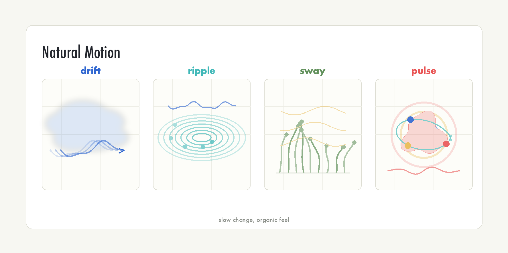
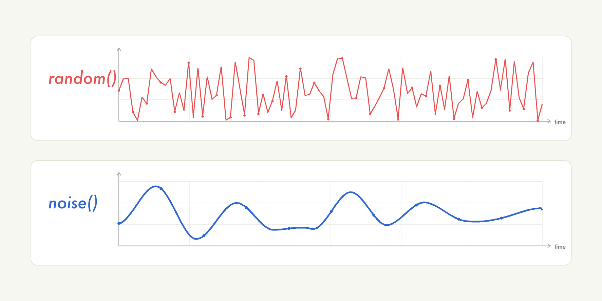
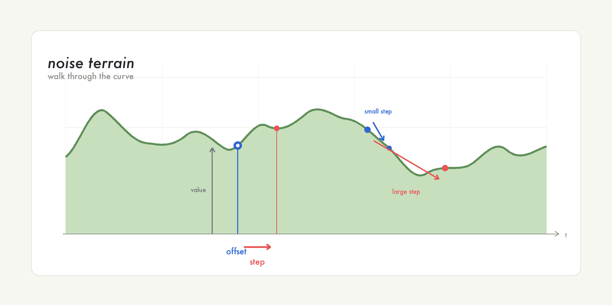
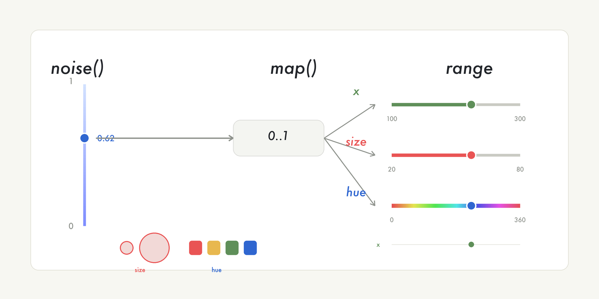
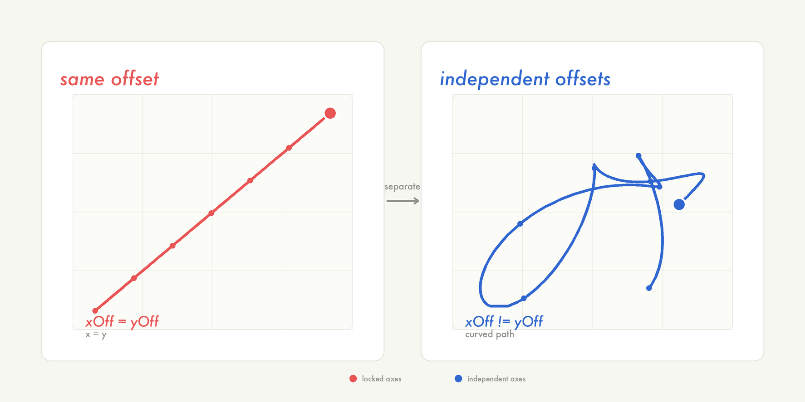
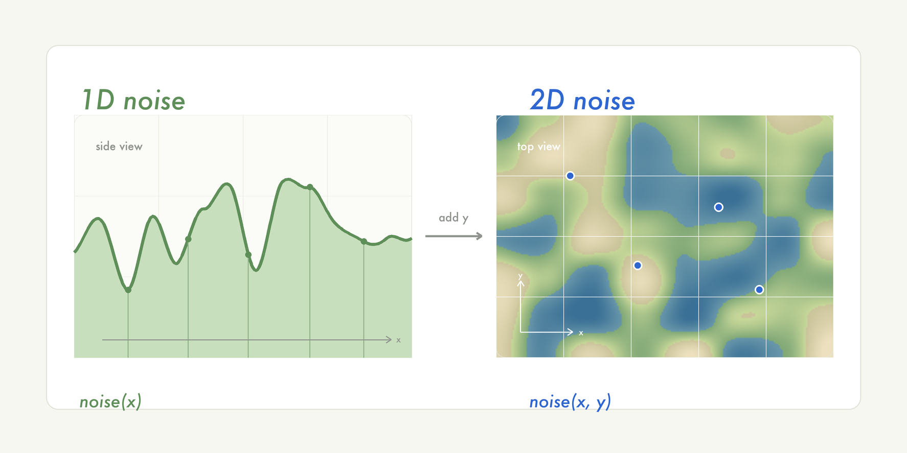

12주차: 노이즈와 자연스러운 움직임 (1교시 · 학생용)
| 항목 | 링크 |
|---|---|
| 강의 아웃라인 | week-12-outline |
| 강사용 교안 | week-12-period1-content |
| 다음 교시 학생용 | week-12-period2-student |
이번 시간이 끝나면 다음을 할 수 있습니다. - noise()와
random()의 차이를 설명할 수 있습니다. - 오프셋(offset)과
증가값(step)의 역할을 이해할 수 있습니다. - map()으로
노이즈 값을 원하는 범위로 바꿀 수 있습니다. - 1D 노이즈로 부드럽게
떠다니는 움직임과 풍경 실루엣을 만들 수 있습니다.
noise()의 본질: random()과 다른 1D 노이즈
도입
11주차에서 이어서
지난주에는 loadJSON(), loadTable()로
JSON·CSV 파일에서 숫자를 읽어와 도형의 크기·위치·색에 매핑했습니다. 그
숫자들은 모두 외부에서 가져온, 누군가가 미리 만들어 둔
데이터였습니다.
이번 시간에는 반대로, 컴퓨터가 스스로 만들어내는, 자연을 닮은
숫자를 다룹니다. 그 숫자를 만들어 주는 함수가 오늘의 주제
noise()입니다.
자연의 움직임 관찰
자연의 움직임을 떠올려 봅니다. 바람에 흔들리는 풀은 한쪽으로 쏠렸다가 천천히 반대쪽으로 돌아옵니다. 갑자기 반대편으로 뚝 꺾이지 않습니다. 물결도 부드럽게 오르내리고, 연기도 좌우로 천천히 흔들리며 올라갑니다.

이 현상들의 공통점은 완전히 규칙적이지도 않고, 완전히 무작위도 아니라는 것입니다. 다음에 무엇이 올지 정확히 예측할 수는 없지만, 부드럽게 이어지는 변화입니다.
5주차에서 random()으로 만든 Random
Walker(x += random(-3, 3))는 매 프레임 방향이 갑자기 바뀌어
움직임이 끊겨 보였습니다. noise()를 쓰면 이런 급격한 변화가
줄어들고 자연처럼 부드럽게 이어지는 움직임을 만들 수
있습니다. noise()는 random()을 대체하는
함수라기보다, 부드러운 자연 현상에 어울리는 다른 성격의
무작위입니다.
핵심 개념 1: random()의 특성 — 독립적인 무작위
random()의 특성을 먼저 짚어 봅니다. 어떤 움직임에
random()이 잘 맞고, 어떤 움직임에 noise()가 더
잘 맞는지 구분하기 위해서입니다.
random(min, max)는 min 이상 max 미만의 무작위 소수를
돌려줍니다. 핵심은 매번 부를 때마다 완전히 독립적인 새
값이 나온다는 점입니다. 직전에 어떤 값이 나왔든 전혀 영향을
주지 않습니다.
이 특성을 그래프로 확인합니다. x축은 시간(프레임), y축은
random()이 만든 값입니다.
function setup() {
createCanvas(400, 200);
background(240);
stroke(0);
strokeWeight(2);
}
function draw() {
let x = frameCount;
let y = random(height);
point(x, y);
if (x > width) {
noLoop();
}
}실행하면 점이 위아래로 불규칙하게 바뀌는 그래프가 나옵니다. 직전 값이 30이든 180이든, 다음 값은 0~200 중 아무 곳에나 나옵니다. 앞 값과 뒤 값 사이에 아무런 관계가 없기 때문입니다.
이 특성을 자연 현상에 그대로 쓰면 어색합니다. 바람 세기가 매 순간 약함→강함→약함으로 갑자기 바뀌고, 기온이 1초마다 20도→5도→35도로 오르내리는 셈입니다.
random(100, 200)을 연달아 10번 부르면, 그 10개 값
사이에는 어떤 관계가 있을까요?
답: 아무 관계도 없습니다. 10개 전부 독립적인 무작위 값입니다.
핵심 개념 2: noise() — 연속적인 무작위
앞에서 본 특성 — ‘앞뒤 값이 서로 독립적이다’ — 과 다른 방식으로 값을
만드는 함수가 noise()입니다. 정식 이름은 Perlin
Noise(펄린 노이즈)입니다.
1983년, Ken Perlin은 영화 <트론>의 컴퓨터 그래픽 작업에서 돌 표면,
나무 결, 구름 같은 자연스러운 질감을 만들어야 했습니다.
random()만으로는 결과가 너무 인공적이고 불연속적으로 보였기
때문에, ’규칙적이지는 않지만 부드럽게 이어지는 무작위’가 필요했습니다.
그래서 Perlin Noise를 발명했고, 이 공로로 아카데미
과학기술상을 받았습니다. 지금도 영화 VFX, 게임, 미디어아트
전반에서 쓰이며, 교재 Nature of Code의 핵심 개념이기도 합니다.
noise()에 숫자를 하나 넣으면 0 이상 1
이하의 값이 나옵니다.
let value = noise(0.5); // 0~1 사이의 부드러운 값입력값을 조금씩 바꿔 가며 불러보면 다음과 같습니다. -
noise(0.50) → 예: 0.43 - noise(0.51) → 예:
0.44 — 거의 비슷 - noise(0.52) → 예: 0.46 — 역시 비슷 -
noise(5.00) → 예: 0.71 — 멀리 떨어진 입력이라 전혀 다른
값
입력값이 조금 변하면 출력값도
조금만 변합니다. random()은 직전 값을
기억하지 못하지만, noise()는 직전 값을 ‘기억하는
것처럼’ 움직입니다. 실제로 무언가를 저장하는 것은 아니고,
’입력이 가까우면 출력도 가깝다’는 성질을 ’기억한다’고 빗대어 표현한
것입니다.
random()과 noise()를 한 화면 위아래에
동시에 그려 비교해 봅니다.
let xOff = 0;
function setup() {
createCanvas(400, 300);
background(240);
// 위/아래 영역 구분선
stroke(200);
line(0, height / 2, width, height / 2);
// 라벨
noStroke();
fill(0);
textSize(14);
text("random()", 10, 20);
text("noise()", 10, height / 2 + 20);
}
function draw() {
let x = frameCount;
// 위쪽: random()
stroke(220, 50, 50);
strokeWeight(2);
point(x, random(height / 2));
// 아래쪽: noise()
stroke(50, 90, 220);
point(x, noise(xOff) * (height / 2) + height / 2);
xOff += 0.01;
if (x > width) {
noLoop();
}
}
random()은 프레임마다 값이 끊기고,
noise()는 앞뒤 값이 이어져 자연 현상 표현에 더
적합합니다.
noise(0.50)이 0.43이었다면, noise(0.51)은
0.43과 비슷할까요, 완전히 다를까요?
답: 비슷합니다. 입력이 0.01밖에 차이 나지 않으므로 출력도 거의 변하지 않습니다.
핵심 개념 3: 오프셋과 증가값 — 부드러움을 조절하는 값
noise()에 넣는 입력값을
오프셋(offset)이라고 부릅니다.
노이즈를 산맥 위를 걷는 이미지로 생각해 봅니다.

오프셋은 현재 위치, 증가값은 다음 프레임으로 이동하는 간격입니다. 조금씩 이동하면 값도 부드럽게 바뀝니다.
노이즈를 쓸 때는 항상 다음 세 줄 구조를 따릅니다. 1.
draw() 밖에 let xOff = 0;으로
오프셋을 선언합니다. 2. draw() 안에서
noise(xOff)로 값을 읽습니다. 3. draw()
안에서 xOff += 0.01;로 오프셋을 조금씩
늘립니다.
let xOff = 0; // draw() 밖에서 선언
function setup() {
createCanvas(400, 400);
}
function draw() {
let value = noise(xOff); // 오프셋 위치의 값을 읽음 (0~1)
// value 활용...
xOff += 0.01; // 다음 프레임을 위해 한 걸음 이동
}let xOff = 0;을 draw()
안에 쓰면 매 프레임 0으로 리셋되어
noise(0)만 반복 호출됩니다. 항상 같은 값이 나와 아무 변화도
생기지 않습니다. 5주차에서 let x = 0을 draw()
안에 두면 도형이 움직이지 않던 것과 같은 원리입니다. 오프셋은 반드시
draw() 밖에 선언합니다.
xOff += 0.01;의 0.01은 부드러움을
조절하는 값입니다. 산맥 위에서 한 걸음의
크기라고 생각하면 됩니다.
| 증가값 | 비유 | 효과 |
|---|---|---|
xOff += 0.005 |
매우 작은 이동 | 아주 부드러운 변화 |
xOff += 0.01 |
천천히 걷기 | 부드러운 변화 (가장 일반적) |
xOff += 0.05 |
보통 걷기 | 적당한 변화 |
xOff += 0.1 |
빠르게 이동 | 빠르고 거친 변화 |
xOff += 1.0 |
큰 폭으로 이동 | random()과 거의 같아짐 |
걸음이 작으면 산 높이가 조금씩만 달라져 부드럽고, 걸음이 크면 한 번에
멀리 가서 높이가 확 달라져 거칠어집니다. 걸음이 1.0처럼
너무 크면 매번 산맥의 완전히 다른 곳에 떨어져 random()과
구별이 안 됩니다.
step 값을 0.005 → 0.01 →
0.05 → 0.1 → 1.0로 바꿔 가며
실행하면 차이를 확인할 수 있습니다.
let xOff = 0;
let step = 0.01; // 이 값에 따라 부드러움이 달라짐
function setup() {
createCanvas(400, 400);
}
function draw() {
background(240);
let y = noise(xOff) * height;
fill(50, 100, 255);
noStroke();
ellipse(width / 2, y, 40, 40);
xOff += step;
fill(0);
textSize(16);
text("step: " + step, 10, 30);
}0.005면 거의 멈춘 듯 부드럽고, 0.05쯤이면
꽤 빠르며, 1.0이면 움직임이 급격하게 변합니다.
증가값 하나로 작품 분위기 전체가 바뀝니다. 보통
0.01~0.05 사이에서 시작하면 무난합니다.
바람에 천천히 흔들리는 풀을 표현하려면 증가값을 크게 할까요, 작게 할까요?
답: 작게 합니다(0.01 정도). 풀은 느리고
부드럽게 흔들리기 때문입니다.
핵심 개념 4: map()으로 노이즈 값 길들이기
noise()가 돌려주는 값은 항상 0 이상 1
이하입니다. 그런데 실제로 필요한 범위는 0~1이 아닌 경우가
많습니다. 좌표는 0~400, 크기는 20~80, 색은 0~255처럼요.
그래서 noise() 옆에는 거의 항상 map()이
따라옵니다. 5주차에서 배운 값을 다른 범위로 바꾸는 함수입니다.
// noise()는 0~1 → map()으로 원하는 범위로 번역
let y = map(noise(xOff), 0, 1, 100, 300); // 0~1 을 100~300 으로
let size = map(noise(sizeOff), 0, 1, 20, 80); // 0~1 을 20~80 으로
noise() 값은 그대로 쓰기보다 map()으로
좌표·크기·색 범위에 맞춰 바꿔 씁니다.
noise()는 항상 0~1을 돌려줍니다. 원하는
범위(좌표·크기·색 등)로 쓰려면 map()으로 번역합니다.
noise() 값을 화면 요소에 연결할 때는
map()을 함께 확인한다고 기억해 둡니다.
크기를 노이즈로 맥동시키는 예제로 map()을
확인합니다.
let sizeOff = 0;
function setup() {
createCanvas(400, 400);
}
function draw() {
background(220);
let size = map(noise(sizeOff), 0, 1, 20, 80);
fill(100, 150, 255);
noStroke();
ellipse(width / 2, height / 2, size, size);
sizeOff += 0.02;
}원의 크기가 부드럽게 커졌다 작아졌다 합니다. noise()로
크기를 정하고 map()으로 20~80 범위로 번역했을 뿐인데
유기적인 느낌이 납니다.
noise()가 0.5를 돌려줬습니다.
map(그 값, 0, 1, 20, 80)을 거치면 크기는 얼마가 될까요?
답: 50입니다. 0.5는 0~1의 한가운데이므로, 20~80의 한가운데인 50이 됩니다.
예제 1: 부드럽게 떠다니는 원 — 독립적인 두 축
배운 내용을 합쳐 첫 작품을 만듭니다. noise()로 x좌표와
y좌표를 모두 정해, 화면을 부드럽게 떠다니는 원입니다.
let xOff = 0;
let yOff = 1000; // x와 다른 시작점!
function setup() {
createCanvas(400, 400);
}
function draw() {
background(220);
let x = noise(xOff) * width;
let y = noise(yOff) * height;
fill(100, 150, 255);
noStroke();
ellipse(x, y, 50, 50);
xOff += 0.01;
yOff += 0.01;
}원이 직선이 아니라 곡선을 그리며 캔버스 안을 부드럽게 이동합니다.
5주차 random() 워커의 불규칙한 움직임과 달리, 이 원은
천천히 떠다니는 물체처럼 보입니다.
왜 yOff를 0이 아니라 1000으로
시작할까요? yOff도 0으로 두면 원이
대각선 직선으로만 움직입니다. xOff와
yOff가 똑같이 0에서 출발해 똑같은 속도로 증가하므로
noise(xOff)와 noise(yOff)가 항상 같은
값이 되고, x와 y가 같으면 대각선이 되기 때문입니다.

x와 y가 서로 다른 경로를 가지려면 오프셋 시작점도 달라야 합니다. 1000이 특별한 값은 아니며, 충분히 떨어져 있기만 하면 됩니다.
| 5주차 Random Walker | 12주차 Noise Walker | |
|---|---|---|
| 핵심 함수 | random(-3, 3) |
noise(xOff) * width |
| 움직임 | 불연속적이고 갑작스러움 | 부드럽고 유기적 |
| 방향 전환 | 매 프레임 랜덤 | 천천히 곡선으로 |
| 어울리는 표현 | 분자 운동, 불규칙하게 튀는 입자 | 연기, 물결, 떠다니는 물체 |
어느 쪽이 더 좋다기보다, 표현하려는 대상에 따라 골라 씁니다.
예제 2: 1D 노이즈 풍경 실루엣 — 옆에서 본 언덕/파도
이번에는 점이나 원이 아니라 풍경을 그립니다. 노이즈로 언덕 능선을 만드는 예제입니다.
원리는 이렇습니다. 화면의 x좌표를 0부터 끝까지 훑으면서, 각 x마다
noise(x)로 언덕의 높이를 정합니다. 그 높이들을 선으로
이으면 산 능선이 됩니다.
선을 잇는 데는 beginShape() / vertex() /
endShape()를 씁니다. 1. beginShape() — 꼭짓점
모으기를 시작합니다. 2. vertex(x, y) — 꼭짓점을 하나씩
찍습니다. for문으로 x를 훑으며 반복합니다. 3.
endShape(CLOSE) — 꼭짓점 모으기를 끝내고, 시작점까지 선으로
닫습니다.
function setup() {
createCanvas(400, 300);
}
function draw() {
background(135, 206, 235); // 하늘색
let scl = 0.01; // 노이즈 스케일 (작을수록 완만한 언덕)
let t = frameCount * 0.005; // 시간에 따라 능선이 흐르도록
fill(80, 140, 70); // 언덕 색
noStroke();
beginShape();
for (let x = 0; x <= width; x++) {
let y = map(noise(x * scl + t), 0, 1, 120, 280);
vertex(x, y);
}
vertex(width, height); // 오른쪽 아래 모서리
vertex(0, height); // 왼쪽 아래 모서리
endShape(CLOSE);
}언덕 능선이 부드럽게 출렁이며 천천히 흘러갑니다. x를 따라가며
noise(x * scl + t)로 높이를 읽고, map()으로
화면 높이에 맞춰 번역한 결과입니다.

입력이 하나면 1D(옆에서 본 풍경), 입력이 둘이면 2D(위에서 내려다본 지도)입니다.
정리
핵심 요약
오늘의 핵심은 네 가지입니다.
| 개념 | 핵심 한 줄 | 기억할 코드 |
|---|---|---|
random() vs noise() |
random()=앞뒤 값이 독립적인 무작위 /
noise()=부드럽게 이어지는 무작위 |
noise(xOff) |
| 오프셋과 증가값 | 오프셋=산맥 위 현재 위치 / 증가값 작을수록 부드러움 | xOff += 0.01; |
map() 활용 |
noise()는 늘 0~1 → 원하는 범위로 번역 |
map(noise(xOff), 0, 1, a, b) |
| 독립적인 축 | x·y는 서로 다른 오프셋에서 출발 | xOff = 0; yOff = 1000; |
자주 묻는 질문
Q.
noise()가 정확히 0이나 1을 돌려줄 수도 있나요? A.noise()의 반환값은 0~1 범위입니다. 다만 정확히 0이나 1 같은 극단값에 의존해서 코드를 짜지는 않는 편이 좋습니다. 원하는 좌표·크기·색 범위가 있으면map()으로 다시 번역하면 됩니다.
Q.
xOff를 0이 아닌 값에서 시작해도 되나요? A. 네, 아무 값이나 괜찮습니다. 0이든 42든 상관없으며, 산맥의 다른 지점에서 출발하는 것뿐입니다. 중요한 것은 x·y 오프셋이 서로 충분히 떨어져 있는 것입니다.
Q.
noise()와random()을 같이 써도 되나요? A. 됩니다. 기본 움직임은noise()로 부드럽게 만들고, 마우스 클릭 같은 이벤트가 생기면random()으로 갑작스러운 변화를 주는 식으로 섞을 수 있습니다.
다음 시간 예고
오늘은 noise()에 입력을 하나만 주어 점을 움직이고 풍경
능선을 그렸습니다. 모두 1D 노이즈였습니다. 2교시에는
입력을 두 개 주어 noise(x, y)로 화면 전체의 텍스처와 밀도
지도를 만들고, 노이즈로 방향을 정하는 Flow Field까지
다룹니다.